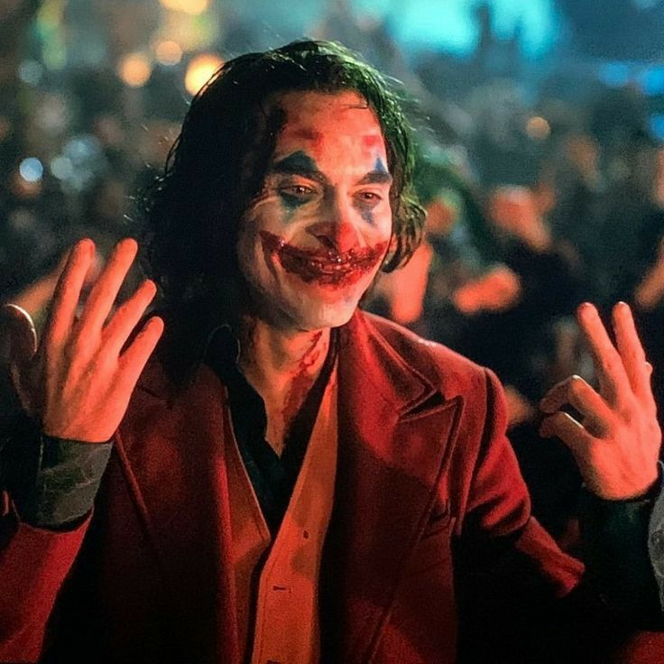

Proyecto de Inf-113
De Sandoval Kevin Oscar
tema Villanos
Mejores villanos del cine (serio y animado)y caracteristicas de villanos(Ficticios)
1. En el cine serio
Hemos escuchado muchas veces que una historia solo puede ser tan
buena como su villano, o en algunos casos refiriéndose al héroe.
Y hay una razón para que esta frase sea común: es cierto.
Aunque algunas películas no cuenta con un villano como tal,
siempre hay un antagonista; pero hay otras que no tienen
como intención presentar a un personaje dispuesto a llevarle
la contraria al protagonista, sino que crean personajes únicos
con motivaciones muy bien desarrolladas, o sin ellas porque
también hay personajes cuya única intención es la de ver el
mundo arder, literalmente.
Un villano aburrido puede puede terminar desinflando una historia
2. En el cine animado
No se debe calificar a todas las peliculas animadas son planas o que no tnegan profundidad ya que si
el publico son niños no quiere decir que es solo para niños o que sea tonta.
A pesar de lo que puedan suponer la mayoria de los villano animado se caracteriza por ser
una figura incorruptible en sus ideologías y acciones incluso llegando a ser en la gran mayoría de los
casos un elemento mucho más peligroso que un villano de acción real, ya que estos son ficticios. Donde tambien existen pocos que tiene algunos matizes
Como se diferencia de los villanos planos a villanos
dinamicos
En la producciones de entretenimiento que mustran una historia memorable
no se puede asumir blanco o negro donde se puede analizar una cara distinta a los villanos, donde la persepcion del
protagonista puede distorsionar la realidad del villano.No siempre tiene que ser representado por un villano com tal ya que hay factores que pueden
servir como antagonicas como el (tiempo).Donde no siempre los villanos tienen objetivos malébolos
¿De donde viene el nombre villano?
Todo indica que fue a partir de la Edad Media cuando empezó a utilizarse
el vocablo villano de una manera despectiva. Por aquel entonces se comenzó
a tener el convencimiento que aquellos que vivían en las villas carecían
de los modales, educación, honor y moral que poseían por naturaleza los
que residían en las urbes importantes, como los burgueses, la nobleza
o aristocracia, los caballeros, los cortesanos e incluso aquellos que
trabajaban como maestros artesanos (a quienes se les otorgaba la
naturaleza de ser leales y de buen corazón, algo que no se le
Mejores villanos del cine (actuales)
Se puede apreciar que las siguientes peliculas tienes diferentes tipos de villanos donde cada uno tiende ditintos tipos de
villanos donde estos son los mejores depende del tono de la pelicula o desde que perpectiva se ve.
Amy Dunne(Perdida)
Conocida también con el nombre de “Amazing Amy”, la mujer interpretada por Rosamund
Pike en Perdida se caracteriza por ser una mujer que es capaz de enamorar a
cualquiera antes de hacerte pedazos. En la adaptación de Gone Girl, David Fincher
toma el material, que ya es oscuro, y lo llena de sus inclinaciones sombrías
características. Amy Dunne, es una mujer con la que no deberías involucrarte,
y la actriz es una revelación en ese papel. Es despiadada y exigente que cuando
se deshace de su máscara revela al monstruo que hay debajo; en este caso después
de que descubre que su marido la engañaba. Aquí no ha divorcio, sino que Amy
escenifica su propia desaparición e incrimina a su pareja por asesinato.
Anton Chigurh(Sin Lugar Para los Débiles)
Javier Bardem, en el papel del villano Anton Chigurh, es eficaz y despiadado,
pero es también un villano único. En Sin Lugar Para los Débiles Chigurh
está motivado únicamente por su deseo de recuperar su dinero. Mientras lo hace,
nos damos cuenta de que también tiene un conjunto de reglas extraño y único: por
un lado, casi mata a un hombre basándose en el lanzamiento de una moneda, luego
anima al dueño de la tienda a valorar esta moneda, dando a entender que significó
la diferencia entre la vida y la muerte para un hombre. Chigurh ofrece, digamos,
compromisos razonables a Llewelyn Moss, el protagonista que es quien le ha robado
su dinero. Su libro de reglas lo convierte en un villano fascinante y amenazador
.
Capitán Vidal(El Laberinto del Fauno)
Si bien es cierto que el cuento de Guillermo del Toro está lleno de criaturas
místicas espeluznantes, el verdadero mal proviene del padrastro de la protagonista,
el capitán Vidal. En El Laberinto del Fauno Sergi López interpreta a un
capitán fascista del ejército español en la Segunda Guerra Mundial, cuya tarea
es la de ejecutar a los rebeldes que se refugian en los bosques. Es un hombre
de ideología y disciplina estricta producto de la tradición militar, pero
también es indulgente y codicioso, emocionado por su propio éxito y ansioso
por imponer su autoridad. Pero por encima de eso, Vidal es un hombre sádico
que encuentra su alegría en la violencia y nunca siente remordimiento por
sus males debido a que se siente justificado por su propia moralidad corrupta.
Hans Landa(Bastardos Sin Gloria)
Hans Landa, interpretado por Christoph Waltz en Bastardos Sin Gloria, es posiblemente
el mejor personaje de Quentin Tarantino hasta ahora, y sin duda su mejor villano.
Landa, un oficial nazi ansioso, se enorgullece de haberse ganado el apodo de “cazador
de judíos", pero no es un villano burlón. Es un hombre que se alegra con la
anticipación ante la idea de atrapar y exterminar inocentes, y no es necesario recalcar,
pero está completamente mal de la cabeza. Su aparente amabilidad y profesionalismo
ocultan a una persona que solo se siente realizada cuando mata judíos.
Joker(Trilogía de Batman)
Por supuesto, la interpretación de Heath Ledger como el Joker en la trilogía de Batman
dirigida por Christopher Nolan ha sido uno de los villanos más convincentes del siglo
XXI. Él no se parece a ninguno de los que se encuentran en esta lista; simplemente
causa el caos porque le da la gana. No tiene una motivación discernible. Es una
amenaza verdaderamente aterradora porque es un terrorista con el que no se puede
razonar ni combatir. Se le ocurren esquemas complejos para causar muerte y destrucción
sin un objetivo claro y abraza el fracaso con los brazos abiertos. No hay forma de
descifrarlo realmente, lo que lo convierte no solo en uno de los mejores de lo que
va de este siglo, sino en uno de los mejores villanos de todos los tiempos.
Lee Woo-jin(Oldboy: Cinco Días para Vengarse)
Quizás uno de los aspectos más importantes de un villano es su capacidad de provocar
disgusto en el público, no solo por su moral retorcida, sino que cuando todo lo
demás falla, su capacidad para inducir la repulsión literal puede hacer que desees
que desaparezca. Lee Woo-jin (Ji-tae Yu), el villano de Oldboy: Cinco Días para
Vengarse, ejemplifica perfectamente esta repulsión a través de sus actos
de maldad y quienes han visto la película lo comprenderán perfectamente.
Él es uno de esos villanos que inventa una trama de venganza tan complicada
que sería cómica si no funcionara tan bien, y en manos del cineasta Chan-wook
Park se convierte en la fuerza impulsora detrás de uno de los mejores relatos
de venganza de todos los tiempos. Es quizás el personaje más diabólico de la
lista, ya que lleva la idea de que el castigo debe ajustarse al crimen hasta
el último extremo.
Miranda Priestly(El Diablo Viste a la Moda)
Meryl Streep lo ha hecho todo, así que no es una sorpresa encontrarla
como uno de los mejores villanos del cine. En El Diablo Viste a la Moda,
interpreta a la editora Miranda Priestly con aplomo, humor y un toque
de vandalismo a su manera. Es una villana más moderada si la comparamos
con otros nombres de esta lista, pero es una de las figuras más complejas
a la vez. Lo que la separa es hasta dónde llegará Miranda para ponerse
a sí misma primero por encima de todo, incluyendo la ética, las promesas
hechas, y más. El villano se encuentra en muchas formas, sin embargo,
siempre puede ser muy devastador cuando este incluye la traición
a la confianza. Miranda contaba con la confianza de los más cercanos
a ella y en un acto de traición, se dio la vuelta y los apuñaló por la espalda.
2.1 Mejores villanos del cine animado (actuales)
Son seis villanos que tenian razon en sus ideales si pensamos con cuidados en sus despectivos mundos
aunque custe trabajo comprender esto no quiere decir que fueran los buenos ni mucho menos los
heroes solo que estyaban haciendo lo correcto por metodos cuestionables.
2.1.1 Light Yagami(Death Note)
Esta ideologia del personaje dividio a las personas en el anime donde ,
esta de lado del otro protagonista "L" y el de Light Yagami mejor conocido como
"kira" a diferncia de varios otros villanos donde sus ideales son algo estupidos
donde esta era mucho mejor y sobretodo mas efectiva y razonada , en la vida real
se a provado que acabar directamente la vida de criminales es la mejor solucion
para acbar la delicuencia como un ejemplo: en Singapur con la pena de muerte a criminales
donde no se puede negar de lo que queria hacer "Kira" era lo correcto erradicando
criminales desde la raiz entendiendo que tenerlos en carsel es un casto que no se
merecen y es un gasto que puede ser usado de mejores maneras.Entendiendo que son
completamente inutiles para reformarlos sin embargo aun con eso se puede ser muy
difi llamarlo heroe debido a que apesar de que hacia lo correcto todo lo hacia
por ser reconocido como un Dios demostrando ser un meganomalo que haria lo que sea
para conseguir el poder.
Pero no quita de que si, hacia lo correcto
2.1.2 Pich Black(Los Guardianes)
En la vida debe existir un equilibrio donde debe convivir la luz con la oscuridad y la alegria
con la triztesa pues los conceptos opustos necitan del uno del otro para seguir existiendo
ya que es el hombre quien encuentra el proposito de su vida en el transito entre un estado
de animo y otro no se puede saber que bien se hizo en la pelicula al elimianr el miendo o
el personaje que lo representa Pich Black o conosido como el "Coco" en la misma pelicula se
dice entre la epoca mas primitiva reinaba el miedo cuendo los pueblos no estaban conectados
y el alumbrado era minimo, el miedo era un factor fundamental de supervivencia, por lo que si lo cumplio
pero para solo hacer mas facil su trabajo eliminaron al Coco erradicando el equlibrio, es
comprensible el por que el mismo queria hacerles lo mismo. Donde no hay nigun heroe o villano como tal sino
que solo un ser que quiere venganza por lo que le hicieron donde lo mandaron al olvido.
En si tenia razon
y motivos por todo lo que hizo.
2.1.3 King Candy(Ralph el Demoledor)
Se puede sumar lo que se vio en el puesto anterior, Pero una pregunta se puede recriminar a alguien por sobrevivir
(no como robar para comoer) sino en una situacion de vida o muerte. La pelicula animada "Ralph el Demoledor"
disfraza muy bien la presion que viven todos los personajes donde si tu juego deja de ser popular este sera
desconectado donde si sales con vida solo te espera mendigar por migajas de los demas juegos y es por ello
lo que hizo "King Candy" era solo supervivencia.
En la segunda pelicula se puede ver lo que hacia no era tan malo , un argumento es que la empresa
que creo a Sugar Rush hace tiempo que quebro pero despues de la 1era pelicula se sabe que el glich que tenian
la protaginista "Vanelope" no era causada por "King Candy" sino que ya era unerror de fabrica
donde en la segunda pelicula ya casi eran desenchufado. Tal vez el villano no entro al poder de las
mejor forma pero en su contro nunca hubo el peligro del desenchufado. A final King Candy era un buen
gobernmate que pudo salvar durante su reinado al juego
2.1.4 Hans(Frozen)
La poltica y la moral muy dificilmente pueden ir de la mano puesto que hay que hacer actos cuestionables
por conseguir bien mayor halgoo que el principe Hans comprendio en primer el no se robo nada
puesto que Elsa renuncio su derecho al trono cuando salio huyendo,trono que fue sedido a Ana donde ella
inmediatamente cedio el poder a Hans, por lo que el nunca se robo la corona.
Pero que te parece mas logico
ir a su busqueda solo, sabiendo que nunca habia salido de casa o ir junto ala caballeria listo para atraparla
pensando que esta pudo ser una desicion politica, se puede ver quien no solo actuaba por instinto
sino que tenga lo mnimo de conosimiento estrategico.
Al final se ve el resultado ya que el la capturo y ella
solo termino con una enfermedad letal.
Aunque es cuestionable que queria matar a Elsa se puede apreciar de que
estaba por poniiendole fin a un ser que condeno a un frio eterno a su propio reino.
Donde Hans no era el verdadero villano de la obra.
2.1.5 Frollo(Jorobado de notre dame)
Para referencia el mas grande literato de la lengua española "Miguel de Crevantes"
en la novela la gitanilla describio lo que en la epoca de los 1500 "Parece que
los gitanos solamente bnacieron en el mundo para ser
ladrones... La Gana del hurtar y hurtar son son en ellos como acidentes inseparables,
que no se quitan sino con la Muerte".
En cientos de años despues en Polonia se vio los raptos perpretados por los Jitanos.
Donde fue lo mismo en Francia. Pues no es por racismo sino que es comprobado de que por
donde vayan los Jitanos les sige el crimen.
Por lo mensionado en la pelicula animada el Jorobado de notre dame es como una Narconovela
done se romantiza los actos ilegales, y se retrata a los criminales como heroes carismaticos y divertidos
en donde eran todo lo contrario. En la misma pelicula se ve como mataban a todo a quel que
entrara en la catacumbas, mismas que no les pertenecian pero que se apropiaron.
En conjunto el juicio del juez "Frollo" hace que esa mision sea mas que justificada pues
en la historia miles de testigos dan fe que el crimen era parte de la vida cotidiana de los gitanos.
No se puede justificar el acoso hacia a Esmeralda pues la principas disonaciua en la justicia que el buscaba.
Por otro lado el tener recluido a Quasimodo tien razones de sobra pues de entrada era pelirojo
y el segunda deforme que en la epoca era suficiente para ser un marginado de la sociedad o como decia el mundo era
cruel y malo para aceptarlo.Cosa que fue confirmado cuando el salio al festival donde se burlaron y lo humillaron.
El personaje de Follo era incorrecto cruel y despiadaddo pero nadie puede negar que "para a aquella epoca" Y
la situacion que se veia con los gitanos en esos años donde no habia otras alternaticas en ese entonces.
2.1.6 Serkan(Libro de la selva)
Una gran verdad es que no hay nada más noble que luchar por el bien no solo propio sino
tambien de cuidar tu hogar y los que viven en ella recordemos que "Serkan" dijo que tener a Mougli
era un gran peligro para este mismo y sus habitantes y ahora ve como termina la pelicula, donde podemos ver la selva
vuelta en llamas precisamente por culpa de Mougli.
Cuando la serpiente cuenta la historia de que la selva ya habia sido quemada alguna ves
y es por ello que cuando vio al padre de mougli lo mato sin pensar un minuto pus tenia una antortcha.
Donde no lo mato por malicia si no para proteger la selva auque esto le custe un ojo.
Mougli poco a poco genereba inventos donde en cualquier momento generara el fuego y en algunamomento terminar
quemando la selva.
Serkan no tuvo malas intenciones solo actuaba en su experiencia de los humanos y el fuego per al final
tenia la razón.
Tipos de villanos
Villanos puros o irracional
Es valido hacer historias con villanos que no tenga los motivos para hacer lo que hace sin embargo
hay que saber donde y como meterlo por que se puede terminar con un gran personaje o con uno ridiculo.
Un ejemplo los villanos de las peliculas antiguas de disney, no solo es para historias sencillas o
infatiles sino que como ejemplo como un villano malo por que es malo es el guason que es
un ser que solo quiere ver arder el mundo
Villanos tragico
Una cosa que confunde esw justificar y exculpar , donde el villano tragico es aquel personaje que termina
haciendo cosas malas pero no decide ser malo por sus propias conviciones y hay se distinge la justificacion
donde en el mundo del cine todo personaje importante debe estar justificado tanto la motivacion del heroe o
la razon por la que el villano busca el caos.Pues si busca el mal por gusto propio es un
Villanos irracional, sin embargo las sircunstancia lo orillaron a terminar como lo hizo es un villano tragico.
Como tailong de "Kung Fu Panda" donde no podemos deceir que es inocente de sus actos tras no recibir el rollo
pero si podemos entender que nuca estuvo en sus planes ser malvado.
Con la misma idea se entrego temas mas fuertes y adultos como la cinta del "Guason" donde vemos que un maltrato fisico
y psicologico durante la infancia , una madre negligente , incapacidad economica para medicamentos
psiquiatricos y una sociedad cruel lo lleva a cruzar una linea que creyo nunca cruzar, pero repitiendo no
permite que realize los actos criminales sino que los justifica las razones que lo hizo

Antiheroe
La clave de un antiheroe es que encuentre el bien mayor a traves de cualquier método siguiendo
la filosofia de "Maquiavelo" capaz de romper los paradigmas morales siempre en pro del bien
de la mayoria, el bien del que se habla debe serlo objetivamente y no subjetivamente.
En palabras mas sencillas es aquel que esta dispuesto a hacer algo horrible por el bien
de todos
Heroe Tragico
Este no es un villano como tal sino que puede terminar siendolo sin que este se de cuenta
toma de referencia la frase "El infierno esta lleno de buenas intenciones" y esta puede estar ligado a la obra
donde el heroe trajho el mal buscando el bien se pued ver en el personaje de Anakin Skywalker de "Star Wars"
donde trata de salvar a su amada pero termina matandola.Tambien como Iro Man de la pelicula de "La era de ultron" donde
el busca proteger al mundo y solo trae a ultron
Villano de Matizes
Una forma de generar un villano potente es quew estye mismo tenga una humanidad donde estos presonajes llenos de matices
y que sea v un villano en donde lo vemos desde ditintos aspectos donde existen quienes buscan un bien con actos cruelespero tambien
pueden caer en tentaciones donde si lo vemos desde distintos angulos podemos ver a un heroe o a un villano